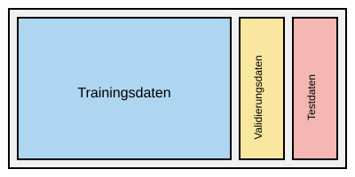

Die Entwicklung eines KI-Systems, das überwachtes maschinelles Lernen verwendet, folgt einem strukturierten Prozess. Dieser Prozess hilft dabei, die Klassifikationsgenauigkeit zu optimieren und die Praxistauglichkeit des Systems bereits während der Entwicklung zu beurteilen.
Schritte zur Entwicklung eines KI-Systems
Daten erfassen, strukturieren und aufteilen
Entwicklung, Training und Validierung des KI-Systems
Testen des KI-Systems
2. Daten erfassen, strukturieren und aufteilen
Der erste Schritt bei der Entwicklung eines KI-Systems ist die Vorbereitung der Daten.
2.1 Datenaufbereitung
Sammeln einer ausreichenden Menge repräsentativer Daten
Strukturieren der Daten in Tabellenform
Aussortieren oder Ergänzen unvollständiger bzw. fehlerhafter Datensätze
Codierung der Daten in geeignete Formate (z. B. Zahlenwerte)
2.2 Datenaufteilung
Die vorhandenen Datensätze werden zufällig auf drei Gruppen verteilt:
Trainingsdaten: der größte Anteil, verwendet zum Training des Systems
Validierungsdaten: verwendet zur Bewertung verschiedener Hyperparameter
Testdaten: reserviert zur finalen Überprüfung der Klassifikationsgenauigkeit
Hinweis: Wozu die Aufteilung?
Die Aufteilung der Daten hilft, Overfitting zu erkennen und die tatsächliche Leistung des Systems auf unbekannten Daten ehrlich zu beurteilen. Bei kleinen Datensätzen ersetzt man die feste Validierungsmenge oft durch eine Kreuzvalidierung: Die Trainingsdaten werden z. B. in 5 Teile zerlegt, und jeder Teil dient einmal als Validierungsmenge (siehe Titanic-Notebook in 10.4).

Abb. 1: Aufteilung der Daten
Vorschau: Overfitting und Underfitting
Im Hinweis oben und in den folgenden Aufgaben tauchen die Begriffe Overfitting und Underfitting schon auf, bevor sie in Abschnitt 4 ausführlich erklärt werden. Damit du sie schon jetzt anwenden kannst, hier vorab das Wichtigste:
Overfitting (Überanpassung): Das Modell hat sich die Trainingsdaten quasi „eingeprägt“, statt die allgemeinen Muster dahinter zu lernen. Man erkennt es daran, dass die Trainingsgenauigkeit sehr hoch ist, die Validierungs- und Testgenauigkeit aber deutlich niedriger liegen.
Underfitting (Unteranpassung): Das Modell ist zu einfach, um die Muster in den Daten überhaupt zu erfassen. Man erkennt es daran, dass Trainings-, Validierungs- und Testgenauigkeit alle drei eher niedrig sind und nah beieinander liegen.
Wie man beide Probleme genauer erkennt und vermeidet, erfährst du ausführlich in Abschnitt 4.
3. Entwicklung, Training und Validierung des KI-Systems
In dieser Phase wird das eigentliche KI-System entwickelt und trainiert.
3.1 Hyperparameter
Hyperparameter sind Einstellungen, die vor dem eigentlichen Lernprozess festgelegt werden müssen – im Unterschied zu den Werten, die das Modell selbst beim Training lernt. Ein einfaches Beispiel: Bei einem Verfahren, das eine feste Anzahl an Gruppen bilden soll, müsste vorab festgelegt werden, wie viele Gruppen das sein sollen – so eine Einstellung ist ein Hyperparameter.
Vorschau: Hyperparameter in den nächsten Kapiteln
In den folgenden Kapiteln lernst du mehrere konkrete Algorithmen kennen, bei denen genau solche Hyperparameter vorkommen, z. B. die Anzahl der Cluster-Zentren beim k-Means-Algorithmus, die maximale Baumtiefe bei Entscheidungsbäumen oder der Wert k beim k-Nächste-Nachbarn-Algorithmus. Du musst diese Begriffe jetzt noch nicht kennen – merk dir nur das Grundprinzip: Hyperparameter werden vor dem Training festgelegt und mithilfe der Validierungsdaten angepasst.
3.2 Training und Validierung
Training des Systems mit den Trainingsdaten
Überprüfung der Leistung mit den Validierungsdaten
Anpassung der Hyperparameter basierend auf den Validierungsergebnissen
Wiederholung des Prozesses mit verschiedenen Hyperparameterwerten
4. Overfitting und Underfitting
Zwei häufige Probleme beim Training von KI-Systemen sind Overfitting und Underfitting.
Abb. 2: Underfitting, gute Anpassung und Overfitting
4.1 Underfitting
Underfitting (Unteranpassung) tritt auf, wenn das Modell zu einfach ist und die zugrundeliegenden Muster in den Daten nicht ausreichend erfasst. Da das Modell die Muster gar nicht richtig lernt, schneidet es überall schlecht ab: Trainings-, Validierungs- und Testgenauigkeit sind alle eher niedrig und liegen nah beieinander.
4.2 Overfitting
Overfitting (Überanpassung) bedeutet, dass das Modell zu komplex ist und sich zu stark an die Trainingsdaten anpasst (sie quasi „auswendig lernt“). Dadurch generalisiert es schlechter, d. h., es lässt sich schlechter auf unbekannte Fälle übertragen. Typisches Erkennungsmerkmal: Die Trainingsgenauigkeit ist sehr hoch, die Validierungs- und Testgenauigkeit liegen aber deutlich darunter.
4.3 Overfitting und Underfitting vermeiden
Um ein möglichst ausgewogenes Modell zu erhalten, gibt es verschiedene Strategien:
Gegen Overfitting:
Mehr und vielfältigere Trainingsdaten sammeln, damit das Modell echte Muster statt Einzelfälle lernt.
Das Modell vereinfachen (weniger Komplexität), damit es weniger Spielraum hat, sich Einzelheiten der Trainingsdaten einzuprägen.
Regularisierung einsetzen: Verfahren, die das Modell während des Trainings „bestrafen“, wenn es zu komplex wird (die genaue Umsetzung lernst du bei den konkreten Algorithmen).
Training frühzeitig beenden (Early Stopping), sobald die Validierungsgenauigkeit nicht mehr steigt, obwohl die Trainingsgenauigkeit weiter zunimmt.
Gegen Underfitting:
Ein komplexeres Modell wählen, das mehr Muster abbilden kann.
Länger bzw. mit mehr Durchläufen trainieren.
Zusätzliche, aussagekräftigere Merkmale (Features) in den Daten berücksichtigen.
5. Testen des KI-Systems
Der letzte Schritt ist das Testen des optimierten Systems mit den zurückbehaltenen Testdaten.
5.1 Konfusionsmatrix
Eine Konfusionsmatrix ist ein wichtiges Werkzeug zur Visualisierung und Bewertung der Leistung eines Klassifikationsmodells. Sie zeigt, wie gut das Modell die verschiedenen Klassen vorhersagen kann.
Abb. 3: Aufbau einer Konfusionsmatrix
Beispiel 1 einfach
Ausgangssituation: Betrachten wir ein Beispiel eines KI-Systems, das E-Mails als Spam oder Nicht-Spam klassifiziert:
TP (True Positives): 300 E-Mails wurden korrekt als Spam erkannt.
FP (False Positives): 50 Nicht-Spam-E-Mails wurden fälschlicherweise als Spam klassifiziert.
FN (False Negatives): 100 Spam-E-Mails wurden fälschlicherweise als Nicht-Spam klassifiziert.
TN (True Negatives): 550 Nicht-Spam-E-Mails wurden korrekt als Nicht-Spam erkannt.
Was: Die positive Klasse festlegen: „Spam“ ist positiv, „Nicht-Spam“ negativ. – warum: Nur so ist eindeutig, was „True Positive“ oder „False Negative“ bedeutet; Precision und Recall beziehen sich immer auf die positive Klasse.
Was: Die vier Werte in die Konfusionsmatrix eintragen (Zeilen: tatsächliche Klasse, Spalten: Vorhersage). – warum: In der Matrix sieht man auf einen Blick, wo das Modell richtig liegt (Diagonale) und welche Fehlerart wie oft vorkommt.
Vorhergesagt: Spam
Vorhergesagt: kein Spam
Summe
Tatsächlich: Spam
TP = 300
FN = 100
400
Tatsächlich: kein Spam
FP = 50
TN = 550
600
Summe
350
650
1000
Was: Zeilen- und Spaltensummen bilden. – warum: Die Zeilensumme „tatsächlich Spam“ (400) ist der Nenner des Recalls, die Spaltensumme „vorhergesagt Spam“ (350) der Nenner der Precision, die Gesamtsumme (1000) der Nenner der Accuracy.
Was: Die Metriken mit den Formeln aus der folgenden Tabelle berechnen. – warum: Jede Metrik beantwortet eine andere Frage an das Modell; erst zusammen ergeben sie ein vollständiges Bild.
Ergebnis: Accuracy = 850 / 1000 = 85 %, Precision = 300 / 350 ≈ 85,7 %, Recall = 300 / 400 = 75 % (Rechenwege in der Tabelle unten). In Worten: Jede vierte Spam-Mail (100 von 400) landet trotzdem im Posteingang.
Kontrolle: TP + FP + FN + TN = 300 + 50 + 100 + 550 = 1000, es fehlt also keine E-Mail. Alle Metriken liegen zwischen 0 und 1.
Basierend auf dieser Konfusionsmatrix können wir wichtige Metriken berechnen:
Metrik
Beschreibung
Formel
Beispielberechnung
Ergebnis
1. Genauigkeit (Accuracy)
Gibt an, wie viele der Vorhersagen insgesamt korrekt waren.
(TP + TN) / (TP + FP + FN + TN)
(300 + 550) / (300 + 50 + 100 + 550)
850 / 1000 = 0,85 bzw. 85 %
2. Präzision (Precision)
Gibt an, wie viele der als positiv (Spam) klassifizierten E-Mails tatsächlich Spam waren.
TP / (TP + FP)
300 / (300 + 50)
300 / 350 ≈ 0,857 bzw. 85,7 %
3. Sensitivität (Recall)
Gibt an, wie viele der tatsächlichen Spam-E-Mails korrekt erkannt wurden.
TP / (TP + FN)
300 / (300 + 100)
300 / 400 = 0,75 bzw. 75 %
Je nach Anwendungsfall kann es wichtiger sein, eine bestimmte Metrik zu optimieren. Bei der Spam-Erkennung möchte man beispielsweise eine hohe Präzision, um zu vermeiden, dass wichtige E-Mails fälschlicherweise als Spam markiert werden. In medizinischen Tests könnte hingegen eine hohe Sensitivität wichtiger sein, um möglichst alle Krankheitsfälle zu erkennen.
Beispiel 2 komplex
Ausgangssituation: Ein Start-up hat ein KI-Modell entwickelt, das auf Röntgenbildern eine seltene Lungenerkrankung erkennen soll. Im Testdatensatz mit 1000 Personen sind 20 tatsächlich erkrankt (2 %). Das Modell erreicht im Test diese Werte: TP = 15, FN = 5, FP = 45, TN = 935. Ein Mitbewerber wirbt mit einer Genauigkeit von 98 % für sein Modell – es stellt sich heraus, dass es jedes Bild als „gesund“ einstuft.
Was: Konfusionsmatrix aufstellen, „erkrankt“ ist die positive Klasse. – warum: Das Modell soll Erkrankte finden; Precision und Recall müssen sich auf diese Klasse beziehen.
Vorhergesagt: erkrankt
Vorhergesagt: gesund
Summe
Tatsächlich: erkrankt
TP = 15
FN = 5
20
Tatsächlich: gesund
FP = 45
TN = 935
980
Summe
60
940
1000
Was: Accuracy berechnen: (15 + 935) / 1000 = 950 / 1000 = 95 %. – warum: Das ist der Wert, mit dem man das Modell auf den ersten Blick mit dem des Mitbewerbers vergleichen würde.
Was: Recall berechnen: 15 / (15 + 5) = 15 / 20 = 75 %. – warum: Bei einer Krankheit zählt vor allem, wie viele der Erkrankten gefunden werden; drei von vier werden erkannt.
Was: Precision berechnen: 15 / (15 + 45) = 15 / 60 = 25 %. – warum: Sie zeigt, wie verlässlich ein positiver Befund ist: Nur jeder vierte Alarm betrifft wirklich eine erkrankte Person. Weil es so viele Gesunde gibt, fallen schon wenige Fehlalarme pro Gesundem stark ins Gewicht.
Was: F1-Score berechnen (Formel aus Aufgabe 11.3.5): 2 · 0,25 · 0,75 / (0,25 + 0,75) = 0,375 / 1 = 0,375. – warum: Der F1-Score fasst Precision und Recall in einem Wert zusammen und ist nur hoch, wenn beide hoch sind.
Was: Das Modell des Mitbewerbers („immer gesund“) nachrechnen: TP = 0, FN = 20, FP = 0, TN = 980. Accuracy = 980 / 1000 = 98 %, Recall = 0 / 20 = 0 %. – warum: Hier liegt die Falle: Bei unausgewogenen Klassen erreicht ein Modell, das nur die häufige Klasse vorhersagt, automatisch eine hohe Accuracy, ohne einen einzigen Krankheitsfall zu erkennen. Die Precision ist sogar undefiniert (0 / 0), weil das Modell nie „erkrankt“ vorhersagt.
Ergebnis: Das eigene Modell hat die niedrigere Accuracy (95 % statt 98 %), ist aber das einzig brauchbare: Es findet 75 % der Erkrankten, das Modell des Mitbewerbers keinen. Weil die Precision nur 25 % beträgt, eignet es sich als Vorauswahl (Screening), nach der ein positiver Befund ärztlich überprüft wird, nicht als endgültige Diagnose.
Kontrolle: 15 + 5 + 45 + 935 = 1000. Faustregel: Bei unausgewogenen Klassen zuerst den Anteil der häufigsten Klasse bestimmen (hier 98 %). Eine Accuracy, die nicht deutlich darüber liegt, sagt nichts über die Qualität des Modells aus.
Praxisbezug: ML Engineer
Alltag: Wenn dein E-Mail-Programm eine wichtige Nachricht im Spam-Ordner versteckt, hast du einen False Positive erlebt.
Beruf:ML Engineers (Machine-Learning-Ingenieurinnen und -Ingenieure) bringen Modelle in den laufenden Betrieb. Sie legen fest, welche Metrik für den Einsatz entscheidend ist, überwachen sie im Betrieb (die Daten ändern sich mit der Zeit!) und trainieren nach, wenn die Leistung sinkt. In der Medizintechnik muss die Leistung eines KI-Modells zudem gegenüber Behörden mit unabhängigen Testdaten nachgewiesen werden – der Sepsis-Fall unter den Links zeigt, warum.
Das Wichtigste
Qualitativ hochwertige und gut strukturierte Daten sind die Grundlage für ein erfolgreiches KI-System!
Man erkennt Overfitting und Underfitting oft schon an den drei Genauigkeitswerten:
Underfitting: alle drei Werte niedrig und nah beieinander
Overfitting: Trainingsgenauigkeit hoch, Validierungs- und Testgenauigkeit deutlich niedriger
gute Anpassung: alle drei Werte hoch und nah beieinander
Das Ziel ist es, ein ausgewogenes Modell zu finden, das weder unter- noch überangepasst ist!
Konfusionsmatrix – Tabelle, die für jede Kombination aus tatsächlicher und vorhergesagter Klasse die Anzahl der Fälle angibt. Bei zwei Klassen unterscheidet man TP, FP, FN und TN. Sie hilft, verschiedene Arten von Fehlern zu identifizieren und die Gesamtleistung des Systems zu beurteilen.
Eine hohe Genauigkeit bedeutet, dass das Modell insgesamt gute Vorhersagen macht.
Eine hohe Präzision bedeutet: Wenn das Modell etwas als positiv (z. B. Spam) klassifiziert, stimmt das mit hoher Wahrscheinlichkeit.
Eine hohe Sensitivität bedeutet, dass das Modell einen großen Teil der tatsächlich positiven Fälle (z. B. Spam) erkennt.
Grundaufgaben
Aufgabe 11.3.1: Daten aufteilen AFB II
Du hast einen Datensatz mit 10.000 Beispielen für ein Bildklassifizierungsproblem.
Wie würdest du diese Daten in Trainings-, Validierungs- und Testdaten aufteilen? Gib prozentuale Anteile an und begründe deine Entscheidung.
Warum ist es wichtig, einen separaten Testdatensatz zu haben, der nicht für das Training oder die Validierung verwendet wird?
Was könnte passieren, wenn du die Testdaten wiederholt verwendest, um dein Modell zu verbessern?
Du entwickelst ein KI-Modell zur Erkennung von Hautkrebs auf Basis von Hautbildern. Nach dem Training stellst du Folgendes fest:
Trainingsgenauigkeit: 99 %
Validierungsgenauigkeit: 85 %
Testgenauigkeit: 84 %
Beantworte folgende Fragen:
Liegt hier ein Fall von Overfitting, Underfitting oder einer guten Anpassung vor? Begründe deine Antwort.
Welche Schritte würdest du unternehmen, um die Leistung des Modells zu verbessern?
Wie würdest du vorgehen, wenn du feststellst, dass dein Modell besonders schlecht bei der Erkennung von Hautkrebs bei Menschen mit dunkler Hautfarbe ist?